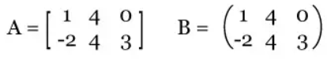
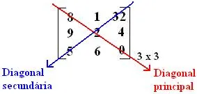
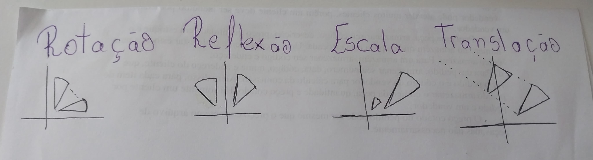

Matrizes
As matrizes são basicamente tabelas que organizam os dados(números). Elas podem ser representadas com colchetas ou parênteses.
Exemplos das formas que as matrizes podem ser representadas:
Forma Geral
Uma matriz é representada por letras maiúsculas, como A, B, C, etc. A forma geral de uma matriz é a seguinte:
A = [am x n]
Para você saber qual é o tamanho da matriz, você precisa olhar para a própria matriz. Na forma geral, a letra M está caracterizando o número de linhas, enquanto a letra N está representadando o número de colunas.
Quando m≠n, a matriz é retangular
Quando m=n, a matriz é quadrada(ordem n)
1. Diagnonais
Fonte: https://brasilescola.uol.com.br/matematica/tipos-matrizes.htm
2. Soma de matrizes (adição e subtação)
Apenas se as matrizes tiverem a mesma ordem(mesmo tamanho)
Exemplo:
A = [1 2 3]
B = [4 5 6]
Resultado:
A + B = [1+4 2+5 3+6]
A + B = [5 7 9]
A - B = [1-4 2-5 3-6]
A - B = [-3 -3 -3]
3. Multiplicação de matrizes pra escalar(n°)
Multiplicamos cada elemento da matriz pelo número
Exemplo:
A = [1 2 3]
Resultado:
2A = [2*1 2*2 2*3]
2A = [2 4 6]
4. Multiplicação de Matrizes
Para multiplicar matrizes, o número de colunas da primeira matriz deve ser igual ao número de linhas da segunda matriz.
Exemplo:
Matriz A
| 1 | 2 |
| 3 | 4 |
Matriz B
| 5 | 6 |
| 7 | 8 |
Resultado (A × B)
5. Transposição de Matrizes
A matriz transposta da matrizA, de ordem m por n, é a matriz Aᵗ, de ordem n por m, que se obtém da matriz A permutando as linhas pelas as colunas de mesmo indice. Ou seja, ela é obtida trocando as linhas de A por colunas de mesmo índice. Para representar uma matriz transposta se usa Aᵀ, basicamente a letra "T" fica elevada, como se fosse uma potência.
Matriz original A 2ₓ3:
| 1 | 2 | 3 |
| 4 | 5 | 6 |
Matriz transposta Aᵀ:
| 1 | 4 |
| 2 | 5 |
| 3 | 6 |
Propriedades
Propriedades da Transposição:
- (A + B)T = AT + BT
- (kA)T = kAT
- (AB)T = BT AT
- (IT)T = I
Calculo de matrizes
Matriz Original:
| 1 | 2 |
| 3 | 4 |
Matriz B:
| 5 | 6 |
| 7 | 8 |
Cálculos de Matrizes:
- Soma: A + B = [[6, 8], [10, 12]]
- Subtração: A - B = [[-4, -4], [-4, -4]]
- Multiplicação por escalar (2A): [[2, 4], [6, 8]]
- Produto de Matrizes (A x B): [[19, 22], [43, 50]]
Matriz Original:
| 1 | 2 |
| 3 | 4 |
Matriz B:
| 5 | 6 |
| 7 | 8 |
Cálculos de Matrizes:
- Soma: A + B = [[6, 8], [10, 12]]
- Subtração: A - B = [[-4, -4], [-4, -4]]
- Multiplicação por escalar (2A): [[2, 4], [6, 8]]
- Produto de Matrizes (A x B): [[19, 22], [43, 50]]
Transformações Gráficas:
As transformações gráficas são alterações feitas em gráficos de funções que podem mudar sua posição, forma, tamanho ou orientação.
Rotação, Reflexão(Espelhamento), Escala(Aumento ou Redução), Translação(Deslocamento)
Equações Matriciais
X - A + B = 0
O problema te dará o resultado de duas letras(A e B normalmente). Logo fica uma equação simples, em que antes do sinal de igual fica a letra que você quer descobrir(x) e depois do igual somente números.